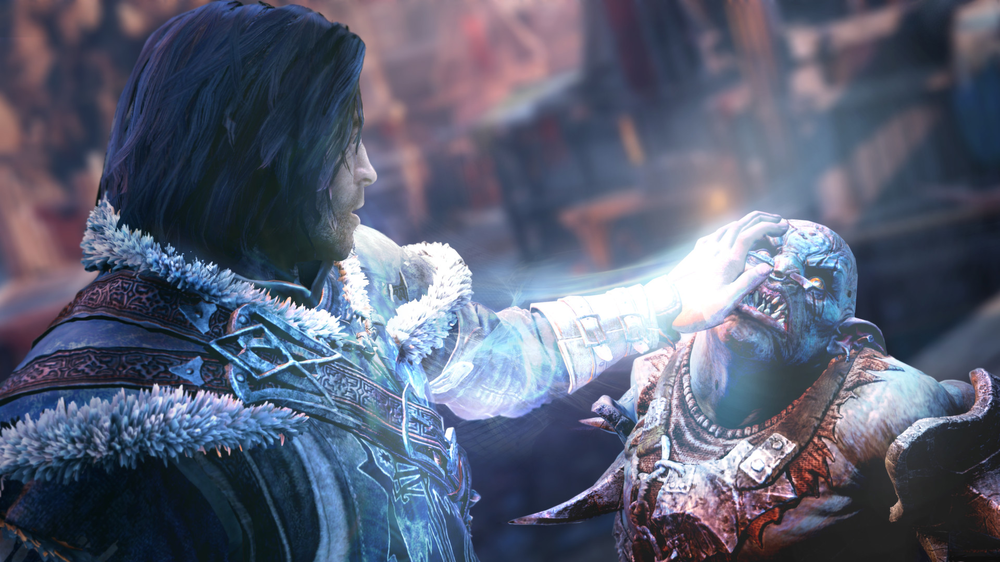

UPDATE: 0.95 Beta Patch Notes
Patch Notes (All platforms unless otherwise noted)
New Features
- Number pad keys can now be used for remapping (PC)
- Remapping Activate now works on Quick Container (PC)
Fixes
- General memory and stability improvements
- Performance improvements inside the Corvega Assembly Plant
- Optimizations to skinned decal rendering
- Fixed issue with player becoming stuck in terminals
- Fixed issue where equipped weapons become locked after completing "Reunions"
- Fixed issue with "When Freedom Calls" where the quest would not complete
- MisterWoodhouse's Note: Just want to clarify that the issue in question is the one where it would say to clear out the rest of the enemies, despite therebeing no more enemies left to kill in Concord.
- During "Confidence Man" fixed issue where player’s health would continuously regenerate
- Fixed crash related to jumping into water and reloading saved games
- Fixed issue where Launcher would not save God Rays Quality setting properly (PC)
- These changes are all of the ones seen in Beta Patches 1.2.33 and 1.2.37, plus the skinned decal rendering optimization.